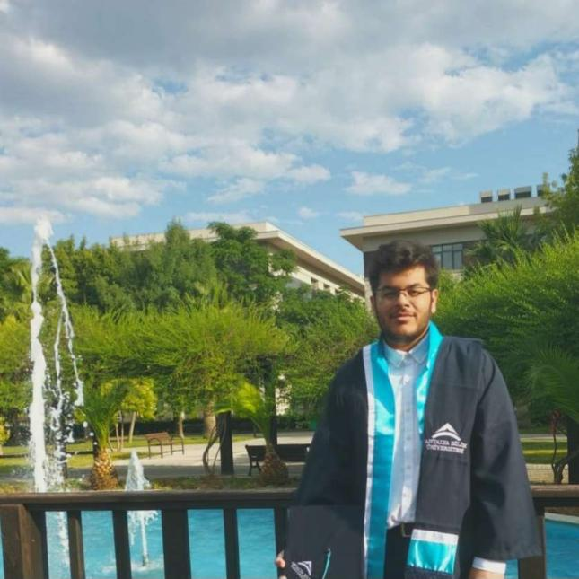

Muhammed Saif Khan

Profile
As a computer engineering undergraduate from Antalya Bilim University,
I have gained knowledge in AI and web development and completed many projects in the
respective fields. One of the most important projects I completed was a stroke prediction
system project. I possess strong skills in software development and data analysis, with a
focus on delivering impactful results.
Education
- Bachelor of Science, Computer Engineering - Antalya Bilim University (2019-2023)
Work Experience
-
Front-End Web Development Intern - Doko
Sept 2022 - Oct 2022
My responsibilities included fixing and rebuilding various aspects of their website, such as:
- Editing images
- Removing unnecessary pages
- Reformatting buttons and links
- Customizing elements using Bootstrap
-
IT Support Intern - Doko
Feb 2023 - Mar 2023
My responsibilities included:
- Installing and configuring hardware, software, systems, networks, printers and scanners,
- Monitoring and maintaining computer systems and networks,
- Responding to service issues and requests,
- Providing technical support,
- Setting up accounts for new users,
- And, repairing and replacing equipment as necessary.
Skills
| Python Programming |
⭐⭐⭐⭐ |
| Web Programming |
⭐⭐⭐ |
| Code Organization |
⭐⭐⭐⭐ |
Other